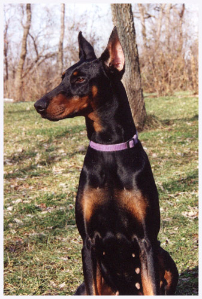

Evansville Obedience Club
Member Steve Stout
Nicki
JesseBae's Schadalana Nicole, CD
Doberman Pinshcer
Birthdate: April 26, 1994
Nicki was my first Doberman and my first dog in Obedience competition. Our first trial, Novice A, was in Lexington, KY. It is a testament to her that we got second place, as I had very little formal training in handling in the AKC ring. Sweet, smart and low-key, she was a fine companion.
She passed in March 2004.
Glory
JesseBae's Glory B Deo, CD, CGC
Doberman Pinscher
Birthdate: December 7, 1997
Glory was the only girl from Nicki's first litter. Her sire was of European breeding and you could tell by her working drive. We earned her CD when she was just over 6 months old. She was the Queen, was always by my side, and held the dearest spot in my heart.
She passed too young in March 2003.
Sarah
JesseBae's Sarah vom Nymphenfury
Doberman Pinscher
Birth date: 1999
Sarah was from Nicki's second litter, sired by Jago Warrior de Furioso, a French import with conformation and working titles. We make plans and then life happens. Sarah was very sweet but my hands were full and I neither showed nor bred her.
She had a long healthy life before passing in 2014
Micha
Magenta's T Micah vom JesseBae, CD
Doberman Pinscher
Birthdate: July 21, 1998
Micah was an awesome find for me, who had previously had no completely European bred Doberman. He lived up to his impeccable pedigree, earning his CD at 2 years old. His conformation and movement were quite good. His temperament was fine and he did well in public. He also produced beautiful pups with good working drives. He was healthy all his life, until at about 10 years old he developed some knee problems. When he was almost 11 he developed cancer in the connective tissue of his knee. He passed in August 2009, after his 11th birthday.
Micah my foundation, my love

Micah at age 10
Mia
Magenta's von der Barlinge
Doberman Pinscher
Birthdate: November 11, 1995
Words cannot do justice to Mia. Beautiful, devoted, even tempered only hint at her spirit. Born in Germany of dam and sire with fabulous reputations. Joyce, of Magenta Farms, imported several great Dobermans. I was blessed to have had Mia. She and Micah blessed me with my B Litter and my cherished Angel. The vet lost her on the table while performing a C section.
Dearest Mia, gone too soon, 11-20-2002
Amico
JesseBae's Amico vom Dobry
Doberman Pinscher
Birthdate: December 1, 2000
Amico was from Glory's only litter. The sire was Robusto van't Ravenland, another import from famous working and conformation lines. Amico was a good sized male with lots of bone. His temperament was exceptional. I chose not to breed him because his dam, Glory died of liver disease. Amico had a good life that was cut a bit short by the all too common Doberman afflication, dilated cardiomyopathy. Fortunate for me that, as of 2017, he is the only one I've kept who developed DCM. My good and happy boy, so dear to my heart,
Amico passed when he was 8 years old.
Asti
JesseBae's Asti vom Dobry
Doberman Pinscher
Birthdate: December 1, 2000
Amico's sister, I had high hopes of breeding her, until her mother died at age 6 years old. Like Amico, she was beautiful but she was far more high key. I couldn't keep her busy enough. Many of my dogs could have gone farther in obedience competition if I had had more time. Asti was also full of fun and affection. I never thought I'd have more than twice the time with her that I had with her dam. She was active well into her 14th year. She went down quickly in summer of 2014 at 14.5 years old.
Asti, my long lived rowdy girl.

Angel
JesseBae's B Angel de Mia
Doberman Pinsdher
Birth date: Nov 20, 2002

Each dog is special and precious. Yet, because of circumstances and of personality, some are just very Special. With Angel it was both. 8 pups delivered by C section and they all had to be bottled fed. Only 2 females (6 males) but I knew almost immediately which one was mine. Funny, with both Angel, and later with Chelsea, my Mom wanted me to pick a different one. But I knew the one for me.
Angel had that special something in the way she moved, and her observation of the situation showed her intelligence. She also had the better head. Unfortunately for us, I was advised to keep the pups sequestered well past week 8 because of fear of Parvo. They didn't get their mother's milk with the antibodies. They all did well healthwise, but I waited too long to socialize Angel. I dreamed of showing her in obedience but she became fear aggressive in new locations. She was fine at home and could welcome new dogs there, but away from home was a scary place for her. Nonetheless, I treasured every moment I had with my Gorgeous Angel. Devoted and yet somewhat reserved. She sensed what I wanted without me speaking, and she was the Best Companion, causing me so little trouble and bringing me so much joy.
 I bred Angel twice and she delivered one puppy on 12-30-2008. Ethan was a "fading puppy" and despite multiple, intense attempts to save him we lost him on 1-2-2009. I was crushed and Angel was looking for her puppy. It was a dark time, but the light in her soul carried us through for more than another 5 years. In October 2013 I found a mass and she had a mammary gland tumor removed. My vet thought she got all of it, but by January I knew something was wrong. Ever the true Doberman, tough and devoted, she fought to stay with me until I sent her home.
I bred Angel twice and she delivered one puppy on 12-30-2008. Ethan was a "fading puppy" and despite multiple, intense attempts to save him we lost him on 1-2-2009. I was crushed and Angel was looking for her puppy. It was a dark time, but the light in her soul carried us through for more than another 5 years. In October 2013 I found a mass and she had a mammary gland tumor removed. My vet thought she got all of it, but by January I knew something was wrong. Ever the true Doberman, tough and devoted, she fought to stay with me until I sent her home.
My Sweetest Angel passed April 15, 2014
Rufina
Magenta's Rufina de Jago, CGC
Doberman Pinscher
Birth date: July 3, 1997
Rufina was given to a friend of mine by Joyce Terrell of Magenta Farms. I heartily endorse Joyce's choices in importing and breeding European Dobermans. I owe her a great deal for the joy that she brought into my life, via our Dobermans. My friend had one litter with Rufina. I knew that Micah and Rufina would produce some great pups. I bought Rufina in early 2003 and that December I got one of my greatest birthday and Christmas presents ever.

The C litter was one of the best working Dobermans we produced. Their protective instincts were second to none! It was my one stumbling blocks with Chelsea. She always tried to keep the other dogs at trials away from me. When I think of a tough Doberman I think of Rufina. She went through a lot over the years and she remained always on top and full of determination and protection. Here's one of my favorite photos, Mother and Daughter, Chelsea.
Rufina truly would 'never say die'. Devoted and tougher than diamonds, I finally had to send her home, over the rainbow bridge.
August 30, 2010
Chelsea
UCD JesseBae's Chelsea Nicole, RA, CD, CGC
Doberman Pinscher
Birth date: December 6, 2003
The years from 2001 - 2004 were very challenging. They were both rewarding and heartbreaking. Glory passed in the fall of 2003, the B litter pups were in new homes but I was still concerned about Angel's development. Angel turned 1 year old about a month after Glory passed and 2 weeks later Rufina delivered the C litter. Then in early spring 2004 Nicki passed. I lost my first dam and her first puppy within 5 months of each other. The C litter was my 5th and was one of the best when it came to conformation and working apptitude. Chelsea exemplifies the best of that litter.
Some photos are worth more than we can measure. This is one of my favorite photos, remminding me of a good time, before the next round of bad times hit. Angel was about 6 months old and Glory's passing was less than 6 months ahead but I didn't yet know she was sick. From left to right: Glory, Angel and Nicki
Today, March 20, 2017, I am very blessed to have Chelsea laying next to me. We've shared many days and nights. She's always been there to comfort me. Chelsea's always been physically and mentally strong. She demonstrates the Doberman temperament with her devotion, intelligence, nobility and protective instincts. She fears nothing. I wonder if I'll ever be so blessed again as I was when I received Angel and Chelsea. I wish I had more photos from earlier days but since my cameras went ditial in 2006 I have many memories to share. Here are just a few
Chelsea qualified in every single trial we entered, but one and that was my fault for missing a sign in Rally. She has always wanted to please me and work with me. Watching Chelsea move was a pleasure. Here are two photos of her running that I melded into one photo.
One of the greatest pleasures of my life has been watching these two wonderful (half) sisters grow, learn, play and live together for 12 years. They have been the greatest of companions.
Zoe
Doberman
Swift Run Arielle v JesseBae On Thunder Road, RA, CD, BH, WAC, CGC
Birthdate: June 18, 2009
My sixth litter, from Rufina by UDC CH Swift Run Showstopper v Kkro. BSA E1A BH UDC-CD WAC CGC brought another 9 pups with exceptional working drive. My favorites were Fritz, who got his Schutzhund 1, and Danni, who produced several litters. Zoe is from Danni by CKC CH/Intl. CH/BIS UKC CH Bell'Lavoros Dio Di Giove, CGC, TDI, WAC, VCX, DV-ZTP1A, ADPr, FH, IPO3, VPG3, SCH3, WD3, Korung 1B, one of few American bred Dobermans to pass the German Körung breed survey. Zoe is very devoted and can perform quite well in the ring. However, she seems to have some ADD along with the OCD that most Dobes have, resulting in us always coming up one exercise short of our 3rd leg in Graduate Novice. But I gotta love her. She is always glued to me.
Lisey
Bell'Lavoros Ballo la Dolce Vita, RA, BN, CD, CGC
Doberman
Birthdate: September 21, 2010
Obviously I need to update my photos since she was about 1 when these were taken. Lisey is Zoe's half sister from Danni by HR-CH Merlin of Black Magic Land, WAC, IPO1.
Lisey has the terrific working drive of her dam and the spirit of her sire who was sharp. Unlike Zoe her focus in work and play is terrific and she loves working with me, whereas Zoe would just as soon be chllin'. Lisey could go far, and I do plan to get her BH and hopefully WAC. But her enthusiasm for other dogs, and sometimes dominating them, has led into an unpleasant event in the ring. She didn't like the male Dobe next to her invading her space and she reacted sharply, though not touching him. I wish she could be more pacific, but I was extremely proud that she didn't touch the other dog and she held her sit stay. I certainly don't want to disrupt the class for the other teams, but I do wish they could know that Lisey is not vicious. Here she is with her close friend Sophia, a Chinese Crested. They've slept together for years.
Yesterday, Today and Tomorrow
Dobermans have brought much joy to my life. Other dogs have done so as well but Dobermans will forever be special for me. Despite all the unpleasant times I wouldn't change it if I could. I had six litters, three of which were equal to any of the best of today's "Total Doberman". I tried breeding Zoe twice and Lisey once. After 3 failures I decided it wasn't meant to be.
I still have hope for tomorrow since I have Micah's semen in storage. I hope to see yet more Micah puppies before I cross the Rainbow Bridge to join my family. Last year I took over the job of editor of "Focus", the United Doberman Club quarterly magazine. I put together a photo collage for my column. Here's my pack since May 2014 when Asti passed a month after Angel. From left to right: Chelsea, Lisey, Zoe
March 2016